地政学
ジェッダは紅海の東岸で、スエズ運河、アフリカ沿岸、アラビア半島内陸を結ぶ港だ。メッカへの玄関口でもあり、国家の宗教外交、港湾安全保障、巡礼管理が日常の交通と商業に重なる都市である。紅海情勢の影響も受ける。

🇸🇦 サウジアラビア / 中東 / World City Atlas
紅海の港、メッカ巡礼の玄関口、歴史地区アル・バラド、珊瑚石の家並み、商業、物流、海辺の暮らしが重なるサウジアラビア西岸の都市。
都市の骨格
ジェッダは港湾、空港、高速道路、旧市街、海岸遊歩道が連なり、巡礼、貿易、観光、日常生活を同じ都市圏で受け止めている。
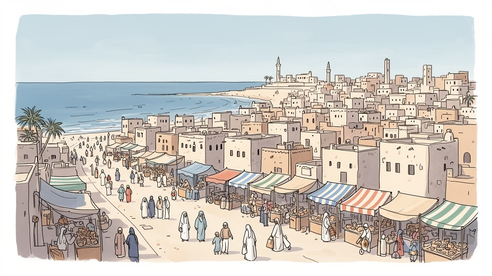
ジェッダは紅海の東岸で、スエズ運河、アフリカ沿岸、アラビア半島内陸を結ぶ港だ。メッカへの玄関口でもあり、国家の宗教外交、港湾安全保障、巡礼管理が日常の交通と商業に重なる都市である。紅海情勢の影響も受ける。
港湾、通関、倉庫、航空、ホテル、小売、建設、食品、金融サービスが都市を支える。巡礼期には宿泊、清掃、送迎、警備、医療の仕事が膨らみ、移民労働者と地元商人の技能が街の運営を支える。若者雇用も重要だ。
ジェッダは聖地に近い港町として、イスラムの礼拝暦と海商都市の開放性を併せ持つ。ヒジャーズの食、音楽、家族儀礼、歴史地区の木格子窓、巡礼者の記憶が、保守性と多文化性を同時に映す。日常の声も今に残る。
住民は海岸の散歩、モール、市場、旧市街、郊外住宅地を使い分ける。観光はアル・バラドと紅海の眺めを見せるが、暑熱、移動距離、家賃、若者の雇用、都市更新の緊張も街歩きに現れる。夜の海風も魅力だ。旅にも近い。
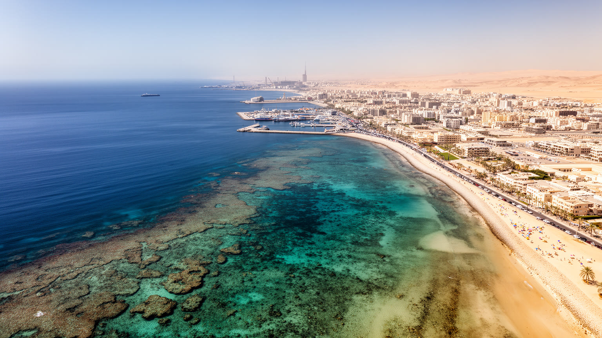
ジェッダの地理は、紅海の細長い水面とヒジャーズ山地へ向かう乾いた後背地の間にある。海は都市に湿った風、魚、物流、観光の景観を与え、内陸へ伸びる道路はメッカ、メディナ、リヤド、内陸の市場へ物資と人を送り出す。旧市街はかつて海に近い城壁都市として発達し、港と市場と巡礼宿が近接していた。近代化後は市街地が北へ南へ大きく伸び、空港、高速道路、海岸道路、郊外住宅、商業モールが都市の距離感を変えた。雨は少ないが、急な豪雨は排水の弱い地区に被害を与えることがあり、乾燥都市でも水害は重要な課題になる。海岸の埋め立てや遊歩道整備は都市の顔を明るくした一方、珊瑚礁、浅瀬、漁業、古い港町の記憶との関係も問われる。ジェッダを見るときは、紅海を単なる背景ではなく、交易、気候、食、娯楽、国家戦略を同時に動かす基盤として読む必要がある。水辺に近い地区では眺望が価値を生むが、内陸の住宅地では車移動と暑さが生活条件を決める。港、空港、旧市街、海岸の距離が広がったことで、都市を歩いて理解することは難しくなり、道路と駐車場が日常の景観になった。それでも夕方の海辺や旧市街の路地には、ジェッダが海へ向いて育った都市である感覚が残る。地形は静かな背景ではなく、どこに住み、どこで働き、どの時間に移動するかを決める力である。その差が街の表情を変える。
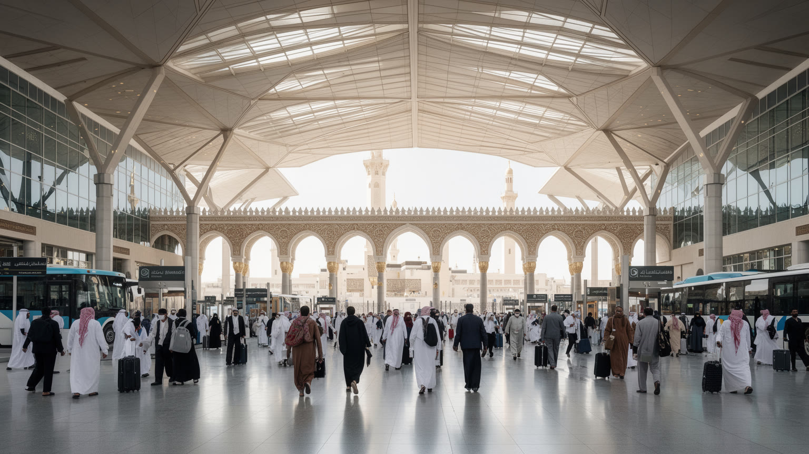
ジェッダはメッカの都市ではないが、世界中から聖地へ向かう人びとにとって最初に触れるサウジアラビアの都市であり続けてきた。港の時代には船で到着した巡礼者が旧市街の宿に泊まり、市場で必要な物をそろえ、案内人や商人を通じて内陸へ向かった。航空時代になると、キング・アブドゥルアズィーズ国際空港とハッジ専用施設がその役割を引き継ぎ、バス、鉄道、高速道路、医療、警備、入国管理が巨大な巡礼移動を支える。巡礼は宗教行為であると同時に、都市運営の高度な仕事でもある。宿泊、食事、清掃、通訳、両替、通信、救急、迷子対応、熱中症対策が必要になり、短い期間に都市の能力が試される。ジェッダの商業とサービス業は、この反復される世界規模の移動から多くを学んできた。巡礼者は客であるだけでなく、記憶と物語を持ち帰る都市の使者でもある。巡礼期の都市は一時的に多言語化し、ホテルの受付、薬局、携帯電話店、食堂、バス乗り場で小さな調整が積み重なる。高齢者や初めて海外へ出る巡礼者も多いため、案内の分かりやすさや休める場所は信仰の尊厳に関わる。聖地への道を支える都市として、ジェッダは祈りそのものではなく、祈りへ向かう身体と時間を守る役割を担っている。国籍や所得の違う人が同じ空港やバスに集まるため、都市の受け入れ能力は平等性にも関わる。待ち時間、暑さ、言葉の壁をどこまで軽くできるかが、玄関口としての信頼を左右する。
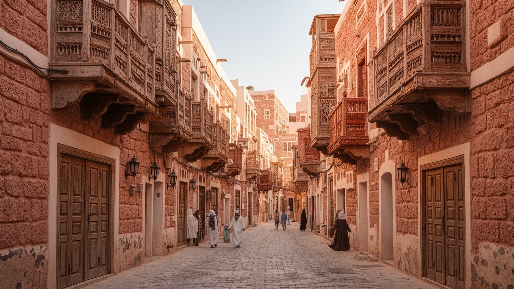
アル・バラドはジェッダを理解するうえで欠かせない歴史地区である。珊瑚石や木材で造られた高い家々、ロシャンと呼ばれる木格子の張り出し窓、狭い路地、市場、古いモスクは、紅海交易と巡礼宿の都市だった時代を伝える。木格子は外からの視線を調整しながら風を通し、暑い気候の中で家族の生活を守る知恵でもあった。歴史地区は観光資源として整備が進む一方、老朽化、火災、空き家化、地価上昇、住民の移転という課題を抱える。保存は建物の外観を整えるだけでは十分でない。香辛料や衣服を売る店、礼拝へ向かう人、古い家族の記憶、移民商人の足跡が残って初めて、地区は生きた都市の一部になる。アル・バラドを歩くことは、近代的な湾岸都市像とは別のサウジアラビアを読むことでもある。港町としての開放性、宗教都市への入口としての緊張、家族生活の内側と市場の外側が路地で重なっている。修復された建物が美しく見えるほど、そこに誰が住み、誰が商い、誰が掃除し、誰が家賃を払えるのかが問われる。夜の散策や祭りの演出は地区へ新しい人を呼ぶが、観光の舞台になりすぎると日常の声が薄れる。歴史を守るとは、石材や木材だけでなく、店番の会話、礼拝の行き帰り、家族の記憶を都市の現在に残すことでもある。路地の陰影や風の通り方は、暑い港町の生活技術そのものでもある。建築の美しさは、気候と社会の知恵として読める。
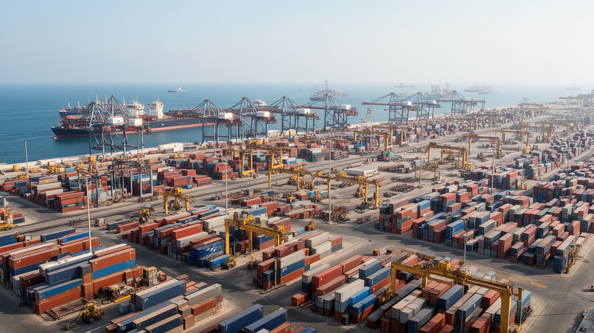
ジェッダ・イスラム港はサウジアラビア西岸の重要な物流拠点であり、食品、機械、建材、自動車、消費財、巡礼関連物資を扱う。紅海はスエズ運河を経て地中海と結び、アフリカの港、インド洋、アジアの生産地ともつながるため、港の効率は国内の物価や供給網に直結する。岸壁、コンテナヤード、通関、冷蔵倉庫、トラック、内陸配送は見えにくいが、都市の商業と生活を支える実務である。港湾の近代化は大きな船を受け入れ、手続きを速くし、産業用地を広げる可能性を持つ一方、道路混雑、大気汚染、労働安全、古い港周辺の生活環境にも影響する。港は国際経済の入口であると同時に、移民労働者、運転手、倉庫作業員、税関職員、小売商人が交渉する現場でもある。ジェッダの商都性は、華やかな海岸やモールだけでなく、港の反復作業によって毎日更新されている。コンテナの遅れは店頭の価格や建設現場の工程に響き、冷蔵物流の不調は食卓にも影響する。港湾地区では大型車の動線、労働者の休憩場所、周辺住民の空気の質が都市政策の課題になる。物流を速くすることは重要だが、速さだけを追えば負担は現場に集中する。港の価値は、国家経済の数字と働く人の安全を同時に改善できるかで測られる。紅海の安全保障や航路の不安定化も、保険料、運賃、在庫計画を通じて都市に届く。港は遠い国際情勢を、倉庫と市場の価格へ翻訳する場所でもある。
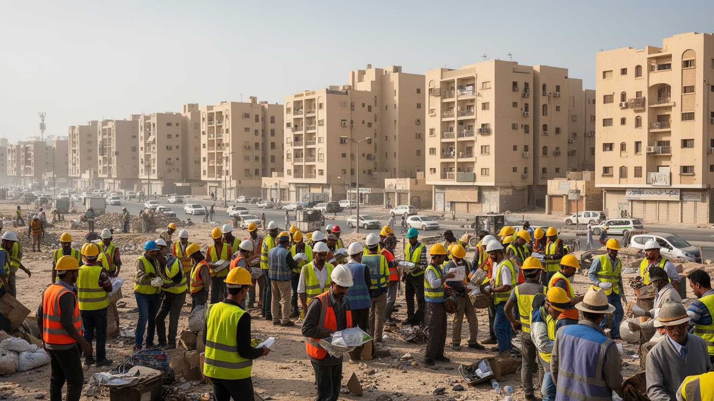
ジェッダの経済は、港湾と巡礼だけでなく、商店、卸売、ホテル、飲食、建設、金融、医療、教育、観光サービスの厚みによって成り立つ。古い市場では香辛料、香水、衣服、金細工、日用品が売られ、新しいモールでは国際ブランド、映画館、カフェ、家族向けの娯楽が並ぶ。都市の表面が洗練されるほど、清掃、警備、配送、厨房、建設現場、ホテルの客室係、運転手、港湾作業などの労働は見えにくくなる。多くの仕事は南アジア、東南アジア、アフリカ、アラブ諸国から来た移民労働者によって支えられ、雇用制度、賃金、住環境、言語、休暇の問題は都市の倫理に関わる。サウジアラビアでは自国民雇用を増やす政策も進み、若者は接客、観光、技術、起業の新しい働き方を模索している。ジェッダの商業を読むには、買い物の便利さだけでなく、その便利さを支える人の移動、住まい、権利まで見る必要がある。女性の就労機会が広がることも、店舗、オフィス、教育、交通の設計を変えている。家族経営の店と大型資本の店が並ぶため、商業の近代化は小さな商人の生存戦略でもある。観光が増えれば接客や語学の仕事は増えるが、繁忙期の長時間労働や低賃金が残れば、都市の成長は働く人の疲労に依存してしまう。雇用の質を高めることは、若者が都市に希望を持てるかにも関わる。技能訓練、交通、保育、住宅がそろって初めて、商業都市の成長は生活の安定へ変わる。
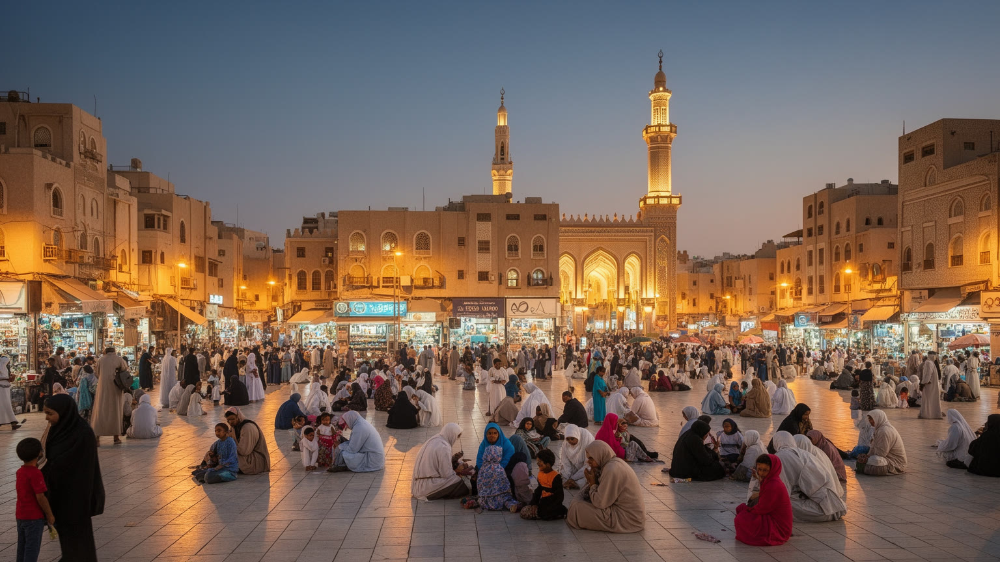
ジェッダの宗教生活は、メッカに近いという特別な位置と、港町として多様な人を受け入れてきた歴史の双方から形づくられる。日々の礼拝、ラマダンの食卓、イードの贈り物、家族の集まり、葬儀、慈善は、街の時間を細かく区切る。商店の開閉、道路の混雑、食堂のにぎわい、海岸の散歩も宗教暦の影響を受ける。聖地そのものではないため、ジェッダには巡礼者を迎える実務都市としての性格が強い。ホテル、バス、食堂、医療施設、通信店、土産物店は信仰を支えるサービスの場でもある。宗教は公的規範として街のふるまいを整える一方、家族、友人、近隣、慈善団体を通じて生活の支えにもなる。近年の社会改革は、娯楽、女性の就労、観光、公共空間の使い方を変えつつあるが、変化は宗教的感覚と交渉しながら進む。ジェッダの信仰を読むことは、厳格さと日常の柔軟さが同じ街にあることを理解することでもある。礼拝の時間に合わせて仕事を組み、ラマダンの夜に家族や友人が集まり、巡礼者を助けることが商売と善行の両方になる。宗教は観光客には見えにくい生活のリズムだが、住民にとっては都市の混雑や余暇の時間まで整える力である。変化の速度が増すほど、信仰と公共生活の関係を丁寧に読む必要がある。公共空間が広がるほど、祈り、娯楽、家族の外出、仕事の時間は互いに近づく。ジェッダの宗教生活は、禁止や規則だけでなく、人が安心して集まるための約束としても働いている。
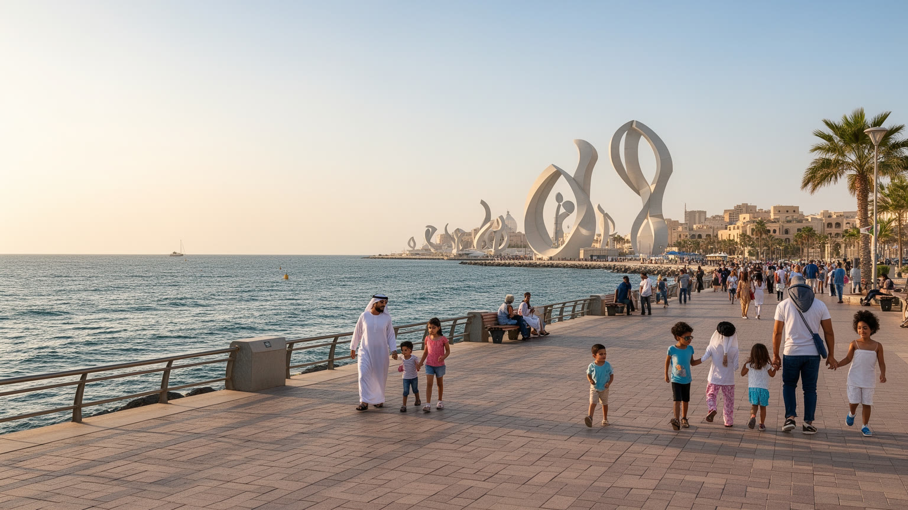
ジェッダのコーニッシュは、海岸道路、遊歩道、公園、彫刻、噴水、カフェ、家族連れの余暇が連なる都市の舞台である。暑い日中を避け、夕方から夜にかけて海風を求める人びとが集まり、散歩、ピクニック、子どもの遊び、写真、友人との会話が続く。紅海の眺めは観光の名物であると同時に、住民が都市の密度と暑さから少し離れるための公共資源でもある。近年はリゾート開発、ウォーターフロント整備、ダイビング観光が進み、海辺はサウジアラビアの新しい観光戦略とも結びつく。だが海岸の美しさは、誰でも使える日陰、トイレ、歩道、公共交通、安全な横断、清掃があって初めて生活の質になる。高級開発が海を囲い込みすぎれば、住民にとっての海は遠くなる。ジェッダの海岸生活を読むことは、観光地としての演出と、家族や若者が日常的に使える都市空間のバランスを見ることでもある。海辺はまた、社会改革の変化が目に見える場所でもある。女性や若者、家族、外国人住民、観光客が同じ公共空間を使うほど、服装、音楽、写真、飲食、移動の感覚は少しずつ調整される。開放感のある海岸は、都市が自分の変化を試す広場でもあり、その使われ方はジェッダの未来像を映している。観光客が増えるほど、住民が普段使う海辺の落ち着きも大切になる。夜遅くまで歩ける安全さ、車に頼りすぎない移動、暑さを避ける設計があれば、海岸は特別な名所ではなく都市の日常になる。
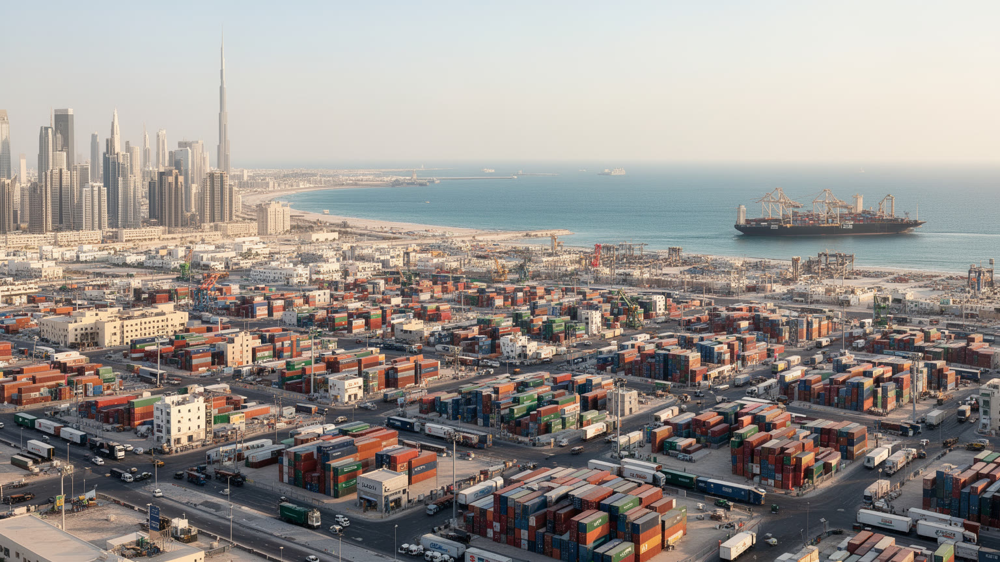
ジェッダの食文化には、ヒジャーズ地方の家庭料理、紅海の魚、巡礼者が運んだ味、インド洋とアフリカの商業路が残した香りが混じる。米料理、焼き魚、スパイスを効かせた肉料理、サンブーサ、甘い菓子、アラビアコーヒー、デーツは、家庭のもてなしや宗教行事と結びついている。港町では食材と調理法が移動しやすく、イエメン、エジプト、レバント、インド、インドネシア、東アフリカの影響も日常の店に現れる。市場は食の記憶を保つ場所であり、魚市場、香辛料店、ベーカリー、庶民的な食堂は、観光客が都市の生活に近づく入口になる。一方で、外食産業の拡大、宅配、モールのフードコート、国際チェーンは若い世代の食の時間を変えている。食文化を豊かさとして語るなら、厨房で働く人、早朝の仕入れ、家族の食費、移民労働者の食堂、ラマダンの夜の混雑も見る必要がある。ジェッダの味は、港と聖地の間で人が行き交った歴史を、毎日の食卓に残している。食の場は階層も映す。高級レストランやホテルのビュッフェが観光の顔になる一方、労働者の食堂や市場の簡素な皿は、都市を支える人の時間と賃金に近い。家庭料理は女性の労働と家族の記憶を抱え、外食の増加はその役割分担も変える。食をたどると、ジェッダの国際性は抽象的な看板ではなく、皿の上の香辛料と会話として見えてくる。
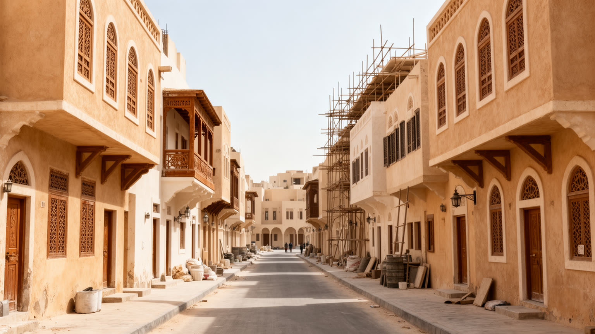
ジェッダでは、歴史地区の保存、ウォーターフロント整備、道路拡幅、郊外住宅、商業施設、観光開発が同時に進み、都市の姿が大きく変わっている。再開発は老朽建物の安全、防災、交通改善、投資、観光収入をもたらす可能性があるが、移転を迫られる住民、小さな店、低所得の借家人、移民労働者の生活を不安定にすることもある。古い地区には不十分なインフラや過密の問題がある一方、そこには職場に近い安い住まい、近隣の助け合い、宗教施設、食堂、修理店がある。都市更新が景観の刷新だけを目指すと、こうした生活の基盤が失われる。サウジアラビアの改革は、観光、娯楽、女性の社会参加、民間投資を広げ、ジェッダにも新しい機会を生んでいる。だからこそ、開発の速度と住民の権利をどう調整するかが重要になる。ジェッダの未来は、高層ビルや海辺のリゾートだけでなく、古い街区に住む人が都市の変化から排除されないかで測られる。住宅地が郊外へ広がるほど、車を持たない人、低賃金で働く人、高齢者、若者の移動負担は重くなる。新しい観光都市を作るなら、公共交通、歩ける道、手頃な住まい、学校や病院へのアクセスを同時に整える必要がある。都市更新は投資の物語である前に、日々の生活をどこへ移すのかという具体的な問題である。計画が成功するかは、完成予想図の美しさより、移転後の家賃、通勤時間、商売の継続、近隣関係をどれだけ守れるかで決まる。住民が変化を受け入れられる速度を設計することも、都市計画の仕事である。
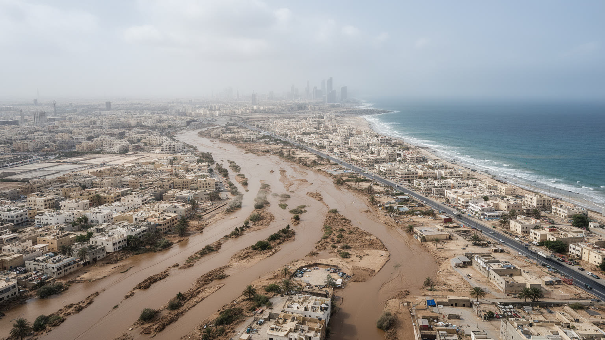
ジェッダは乾燥した沿岸都市だが、環境課題は水不足だけではない。夏の高温と湿度は屋外労働、通学、観光、巡礼関連の移動に負担をかけ、空調への依存は電力消費を増やす。雨は少ないものの、短時間の豪雨が道路や低地を浸水させることがあり、排水、土地利用、舗装、ワジの管理は都市安全の重要な条件になる。海岸では水質、埋め立て、珊瑚礁への影響、レジャー利用、港湾活動が重なり、紅海を守る政策が観光と生活の双方に関わる。暑熱対策は、建物の断熱、日陰、街路樹、公共交通、屋外労働の休憩、水飲み場、夜間活動の安全と結びつく。高級地区だけが快適な環境を得るのではなく、労働者の宿舎、古い住宅地、バス停、市場でも涼しさと排水が必要である。ジェッダの気候適応は、未来の技術計画というより、毎日の移動、働き方、家計、健康を守る都市政策である。巡礼や観光で外から来る人は暑さに慣れていないことも多く、案内、休憩所、医療、交通の連携が命を守る。海岸の魅力を保つには、廃棄物管理や水質監視も欠かせない。乾いた都市であっても、雨、海、排水、冷房の負担が複雑に絡むため、環境政策は見た目の緑化だけでは足りない。涼しく安全に移動できる街路こそ、都市の競争力になる。水を大量に使う緑化や冷房だけに頼ると、別の環境負荷が増える。日陰、風、建築素材、歩ける距離を組み合わせる設計が、暑い港町には欠かせない。
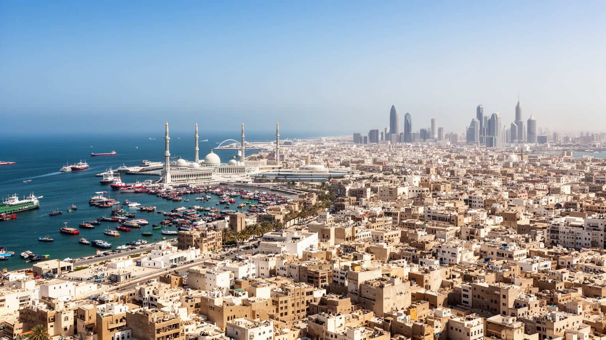
ジェッダは、サウジアラビアの近代化を海から読むための都市である。リヤドが内陸の行政と王権の中心として見えるなら、ジェッダは紅海の交易、巡礼、移民労働、観光、家族の余暇、歴史保存を通じて国家の別の顔を示す。アル・バラドの珊瑚石の家並み、港のコンテナ、空港の巡礼施設、海岸の散歩道、郊外のモール、建設現場、魚市場は、別々の風景ではなく一つの都市を動かす連続した力である。経済だけを見れば商業港としての強さが目立ち、宗教だけを見れば聖地への入口としての役割が前に出る。しかし実際のジェッダは、商人、巡礼者、移民労働者、若者、家族、観光客がそれぞれの時間を持ち寄る港町である。都市の価値は、海辺の開発の華やかさだけではなく、暑さの中で働く人、古い地区に暮らす人、祈りと買い物を日常に組み込む人の生活をどれだけ守れるかに表れる。ジェッダを読むことは、湾岸都市の未来を、歴史と暮らしの側から問い直すことでもある。海を向いた開放性と聖地に近い緊張、急速な改革と保守的な生活感覚、観光の演出と労働の現場が同居する点に、この都市の読みにくさがある。ジェッダは完成した観光都市ではなく、変化の速度を住民の生活にどう合わせるかを試している都市である。港町としての強さは、外から来る人を受け入れながら、足元の暮らしを失わない時に最もよく現れる。